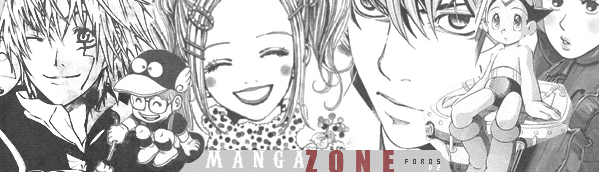

<!doctype html>
<html lang="en">
  <head>
    <meta charset="utf-8">
    <meta name="viewport" content="width=device-width, initial-scale=1">
    <title>TuManga</title>
    <link href="https://cdn.jsdelivr.net/npm/bootstrap@5.2.0-beta1/dist/css/bootstrap.min.css" rel="stylesheet" integrity="sha384-0evHe/X+R7YkIZDRvuzKMRqM+OrBnVFBL6DOitfPri4tjfHxaWutUpFmBp4vmVor" crossorigin="anonymous">
    <link rel="stylesheet" href="style.css">
  </head>
</html>
<body>
  <div class="container">
    <div class="container-xxl navbar-fixed-top">
        <nav class="navbar navbar-expand-lg navbar-light bg-light " >
            <div class="container-fluid">
              <a class="navbar-brand"></a>
              <button class="navbar-toggler" type="button" data-bs-toggle="collapse" data-bs-target="#navbarSupportedContent" aria-controls="navbarSupportedContent" aria-expanded="false" aria-label="Toggle navigation">
                <span class="navbar-toggler-icon"></span>
              </button>
              <div class="collapse navbar-collapse" id="navbarSupportedContent">
                <ul class="navbar-nav me-auto mb-2 mb-lg-0">
                  <li class="nav-item">
                    <a class="nav-link active" aria-current="page" href="index.html">Home</a>
                  </li>
                  <li class="nav-item">
                    <a class="nav-link" href="#">Galería</a>
                  </li>
                  <li class="nav-item">
                    <a class="nav-link" href="formulario.html">Contactanos</a>
                  </li>
                  <li class="nav-item dropdown">
                    <a class="nav-link dropdown-toggle" href="#" id="navbarDropdown" role="button" data-bs-toggle="dropdown" aria-expanded="false">
                      Categorias
                    </a>
                    <ul class="dropdown-menu" aria-labelledby="navbarDropdown">
                      <li><a class="dropdown-item" href="#">Acción</a></li>
                      <li><a class="dropdown-item" href="#">Fantasía</a></li>
                      <li><a class="dropdown-item" href="#">Romance</a></li>
                      <li><a class="dropdown-item" href="#">Aventura</a></li>
                      <li><a class="dropdown-item" href="#">Deporte</a></li>
                    </ul>
                  </li>
                </ul>
                <form class="d-flex">
                  <input class="form-control me-2" type="search" placeholder="Search" aria-label="Search">
                  <button class="btn btn-outline-success" type="submit">Buscar</button>
                </form>
              </div>
            </div>
        </nav>
        <div id="carouselExampleCaptions" class="carousel slide" data-bs-ride="false">
          <div class="carousel-indicators">
            <button type="button" data-bs-target="#carouselExampleCaptions" data-bs-slide-to="0" class="active" aria-current="true" aria-label="Slide 1"></button>
            <button type="button" data-bs-target="#carouselExampleCaptions" data-bs-slide-to="1" aria-label="Slide 2"></button>
            <button type="button" data-bs-target="#carouselExampleCaptions" data-bs-slide-to="2" aria-label="Slide 3"></button>
          </div>
          <div class="carousel-inner">
            <div class="carousel-item active">
              
              <div class="carousel-caption d-none d-md-block">
                <h5 id="colorA">¡¡Conoce tu Manga!!</h5>
                <p id="colorA">Con nosotros podrás conocer los diferentes estilos y generos de manga que existen.</p>
              </div>
            </div>
            <div class="carousel-item">
              
              <div class="carousel-caption d-none d-md-block">
              </div>
            </div>
            <div class="carousel-item">
              
              <div class="carousel-caption d-none d-md-block">
                <h5 id="colorA">Contáctanos</h5>
                <p id="colorA">Si tienes dudas,consultas envianos un mensaje! click en Contactanos!</p>
              </div>
            </div>
          </div>
          <button class="carousel-control-prev" type="button" data-bs-target="#carouselExampleCaptions" data-bs-slide="prev">
            <span class="carousel-control-prev-icon" aria-hidden="true"></span>
            <span class="visually-hidden">Previous</span>
          </button>
          <button class="carousel-control-next" type="button" data-bs-target="#carouselExampleCaptions" data-bs-slide="next">
            <span class="carousel-control-next-icon" aria-hidden="true"></span>
            <span class="visually-hidden">Next</span>
          </button>
        </div>
      </div> <br> <br>
      <div class="container" >
        <div class="row align-items-start">
          <div class="col">
            
            <p>
              <h1 id="h1">Shojo</h1>
              Shōjo es uno de los tipos de manga: el dirigido a chicas adolescentes. Sus argumentos son siempre muy inocentes, historias de romance y fantasía.
            </p>
          </div>
          <div class="col">
            
            <p>
              <h1 id="h1">Seinen</h1>
              El Seinen (que en japonés significa "hombre adulto") es un tipo de anime destinado, generalmente, a personas de sexo masculino mayores de 18 años, normalmente entre 20 y 40 de término medio.
            </p>
          </div>
          <div class="col">
            
            <p>
              <h1 id="h1">Josei</h1>
              Mangas dirigidos a mujeres jóvenes y adultas, suelen compartir temas con el shôjo pero a través de una perspectiva más madura, añadiendo elementos dramáticos, eróticos o de acción, así como protagonistas inmersas en un mundo laboral.
            </p>
          </div>
        </div> <br><br>
        <div class="container" >
          <div class="row align-items-start">
            <div class="col">
              
              <p>
                <h1 id="h1">Kodomo</h1>
                Podríamos denominarlo como el “manga infantil”. Obras dirigidas a niños y niñas de corta edad, con aventuras de todo tipo, muy simples y con ausencia de violencia.No necesitan presentación un ejemplo de kodomo por todos conocidos es Doraemon.
              </p>
            </div>
            <div class="col">
              
              <p id="table">
                <h1 id="h1">Isekai</h1>
                Predominan las aventuras de fantasía donde el protagonista suele aparecer en otros mundos, frecuentemente medievales, donde puede llegar incluso a ser el héroe. Muy en auge en Japón desde principios de la presente década.Ejemplos de isekais serían The Rising of the Shield Hero u Overlord.
              </p>
            </div>
            <div class="col">
              
              <p>
                <h1 id="h1">Spokon</h1>
                Mangas dedicados a los deportes, sin más. Los aficionados a casi cualquier deporte podrán encontrar un manga que trate sobre el mismo. Hay mangas de béisbol, baloncesto, ciclismo, tenis, fútbol, voleibol, boxeo, etc.Ejemplos, famosísimos por cierto, de spokon podrían ser Capitán Tsubasa (Oliver y Benji en nuestro país) y Slam Dunk.
              </p>
            </div>
          </div> <hr>
          <div class="container">
            <a  href="https://www.youtube.com/watch?v=62g9TICv0M4" target="_blank"> <h1>TOP 6 Mejores MANGAS FINALIZADOS Recomendación de MANGAS </h1> <hr>
            <a href="https://www.youtube.com/watch?v=_Xwb6JqdMu0" target="_blank"> <h1> 6 MANGAS que DEBERÍAS estar LEYENDO YA - Top de Mangas Recomendados</h1><hr>
          </div><br><br><br>
          
        <footer class="container" id="ffoo">
          <a href="http://www.instagram.com" target="_blank"> 
            <a href="https://web.whatsapp.com/"target="_blank"> 
              <a href="https://www.twitter.com/"target="_blank">  </a> <br><br>
          Derechos reservados &copy: 2022 <br>
          Diseñado por: Esteban Garrido H. <br>
          Email: garrido.esteban14@inacapmail.cl <br>
          wwww.tuMang4.cl <br><br> 
      </footer> 
      
      
      
      
      <script src="https://cdn.jsdelivr.net/npm/bootstrap@5.2.0-beta1/dist/js/bootstrap.bundle.min.js" integrity="sha384-pprn3073KE6tl6bjs2QrFaJGz5/SUsLqktiwsUTF55Jfv3qYSDhgCecCxMW52nD2" crossorigin="anonymous"></script><br><br><br>
  </div>

</body>
</html>